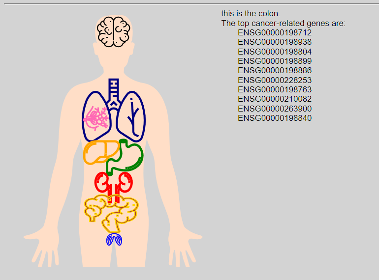
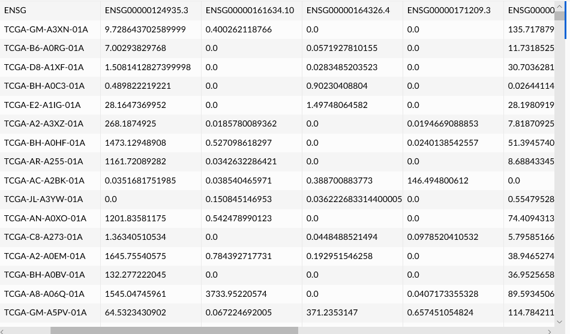
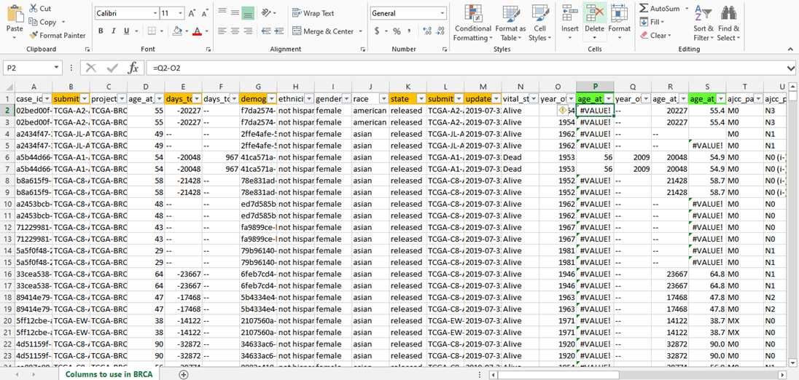
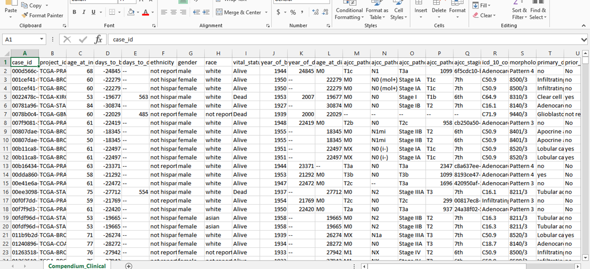
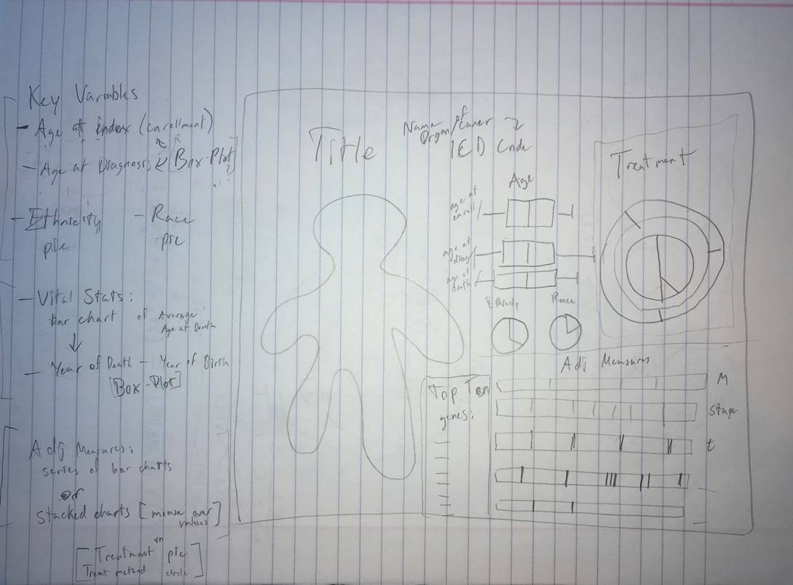
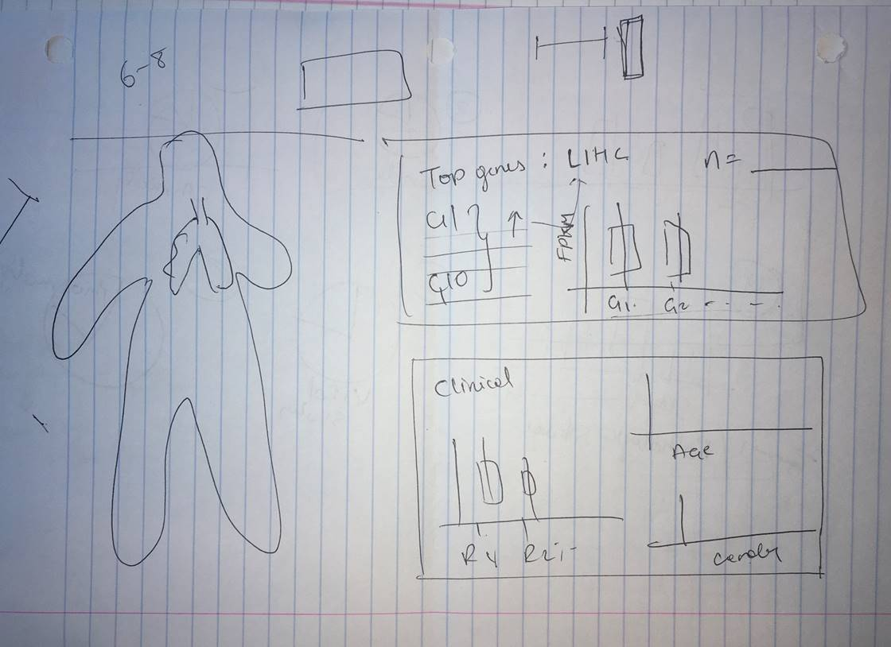
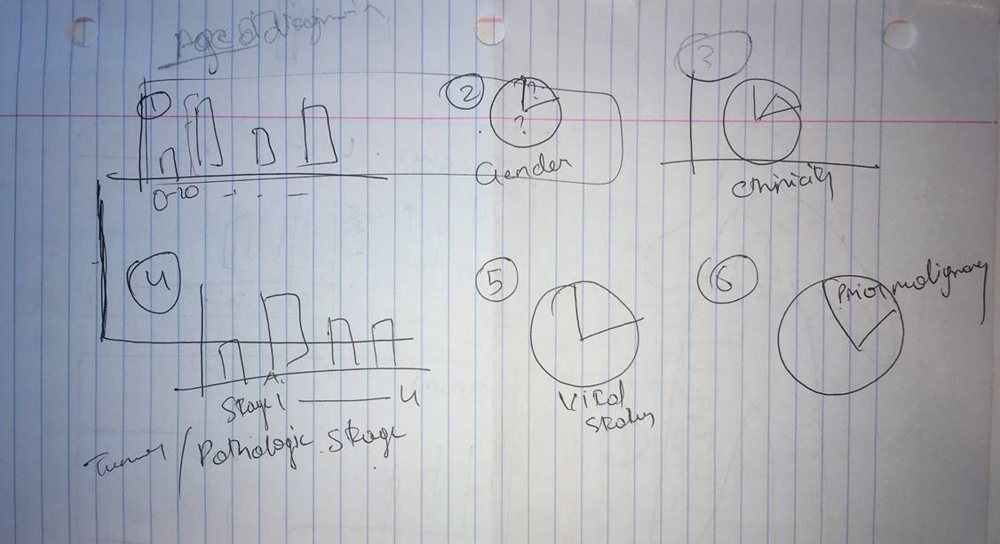

Brendan Bow || Swapna Vidhur Daulatabad || Elie Salomon || Christian Udu Click here for Visualization
The dataset
was obtained from Genomic Data Commons (GDC) portal (https://portal.gdc.cancer.gov),
the repository that holds clinical and demographic data for multiple types of
human cancers. Based on the initial design by the body, we wanted to select
cancers that are easily identifiable and are common from person to person. From
the list of cancers, we selected the following cancer organs: brain, lung,
breast, liver, stomach, kidney, colon/large intestine, and testes. In order to
visualize our cancer organs, we decided to utilize an SVG androgynous human
body, which was found on codepen (https://codepen.io/onur_kaplan/pen/XaWeNK).
The body contained some organ parts of the body initially so the elements of
the body were needed to be hard coded out. This process left the hollow shell
of the body which was essentially the skin. To make best use of our vis, we only implemented from torso up. Next we wanted to
figure out how to visualize the organs. Brendan found a great source on www.flaticon.com,
created by Eucalyp, which has standard SVG organ
segments that we can choose from. This is a great tool to use on expansion of
this work because there a variety of cancers that were not included in this
visualization. Having too many organs may hinder the interactivity with the
body. Because of this, we only included 9 organs to show in this visualization.
With this in mind, we have created our 9 cancer organs and have matching genes
that go along with the lung. Using the source for our body, the outline
segments of organs were resized, recolored, and placed as anatomically accurate
as possible. While there are overlaps that occur from one body part to another,
we looked trying to make the visualization as intuitive as possible. The colors
on their own have no meaning on their own but they do provide some
differentiation from other body parts. For the colorblind, the color channel
would not hinder their understanding of the figure. The body was created with
the organs in place and were ready to be paired with the incoming data. The
organs themselves were initially placed to be hover events as shown below:

Seeing
that data would need to be displayed next to the organ, we decided that click
events would work well to display everything next to it. Bright yellow
indicates for each selection. In order to visualize what kind of data we wanted
to show, we examined the excel files very closely. Data we used to make our
visualization came from the cancer.org website (https://gdc.cancer.gov/) our team
member Vidhur is part of a research project for
Cancer analysis in a bioengineering laboratory at IUPUI. He was obtaining both
the datasets for top genes and for demographic data. They were released under
NIH approval to Vidhur to use in our analysis. The
first set of excel documents were showing the genetic factor, which is a
quantifiable number of genetic risk on a particular gene given the individuals
have predisposition for cancer. Much of the data was used to create box plots
as it will be mentioned shortly. The code identifiers for each individual
(first were not used in our vis. The top genes excel
file was shown below.

The
next set of excel files were the demographic data. The data showed each
individual patient paired with particular demographic data from below:

While
the data was useful, there were a lot of repeated measures and duplicates of
each individual, so the data would need to be cleaned up. Some primary
identifiers were removed as the data we used to visualize did not require
extensive differentiation. Combining the data sets for each gene by matching
their variables was an ideal strategy to reduce the computational workload for
html and d3. The data would be able to quickly be obtained instead of using
multiple data sets for multiple types of cancers. With duplicate patients
removed, the individuals were decreased to a little over 3000 individuals with
cancer. The data itself was intuitive to use the few identifiers and were
combined into a single document shown below:

To
create the visualization itself, we came together to formulate a plan. The
initial tactic was to formulate a visualization that included a good majority
of the plots, including adjustment measures such as t and m measurements. The
data would include many demographical data and would give itself a decent
looking visualization if done correctly. The schematic is shown below:

However,
we decided to move forward with a more pragmatic approach that would visualize
the key variables from the graphing data set. These variables would help us not
only create a more concrete visualization, but also allow us to answer key
questions about our vis.


To
create our vis, we took inspiration from the dashboard
idea found on http://bl.ocks.org/Andrew-Reid/11602fac1ea66c2a6d7f78067b2deddb.
We decided to add 7 different components to our dashboard: upregulated genes
(top genes), gender, race, ethnicity, malignancy history, age at diagnosis, and
pathologic tumor stage. The top genes were obtained from other excel documents
while the rest of the data were pulled from the combined demographic dataset.
As show in the second picture from above, the data was displayed in to show the
top genes on top of the actual genes. Next the demographic data were arranged
much like the way it was drawn in the third image from directly above. The 6
graphs were created with the use of basic javascript.
The color differentiates well for all variables as it is colorblind friendly.
Given
our use of these graphs we were able to answer some key questions about our
visualizations. The demographic data is appropriately paired with the data
shown on occurrence of data, which can open up data exploration on certain genetic
disposition in particular patient demographics. By the use of this tool, it
answers the efficacy of its use by non-experts. While the genetic component is
beyond the scope of a regular user, a normal individual can intuitively
understand the basic information about each cancer. While there would be signs
providing instructions in how to interact, it would be useful for the
individual to explore differences between cancer types and their malignancy. We
are not yet able to give an interaction that would explore sub-types of
cancers, but it is certainly obtainable using this framework. From a
researcher’s standpoint, this tool is easy to use to pose testable hypothesis,
especially in biostatistical analyses. The expression
could be expressed in a different way but the message of the visualization
shines through. Clinicians could effectively give better judgement about their
existing beliefs and even pursue demographic specific interventions to tackle
cancer related issues. With our future direction, we would love to expand this
data even more than before by including more organ cancers and using two sided
model (eg. One of the two lungs) to include more
cancer types.